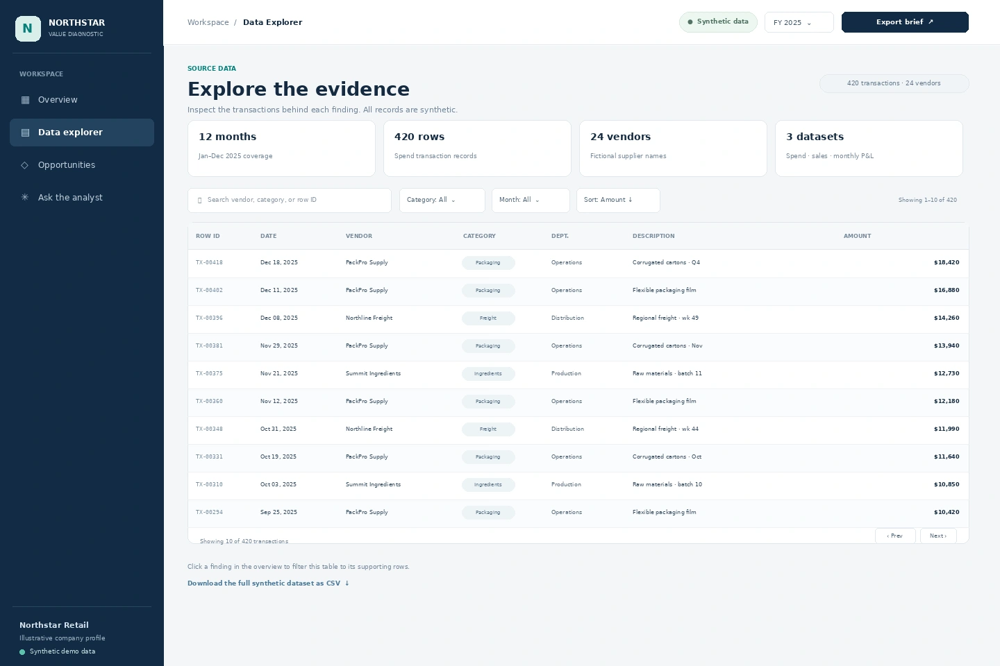
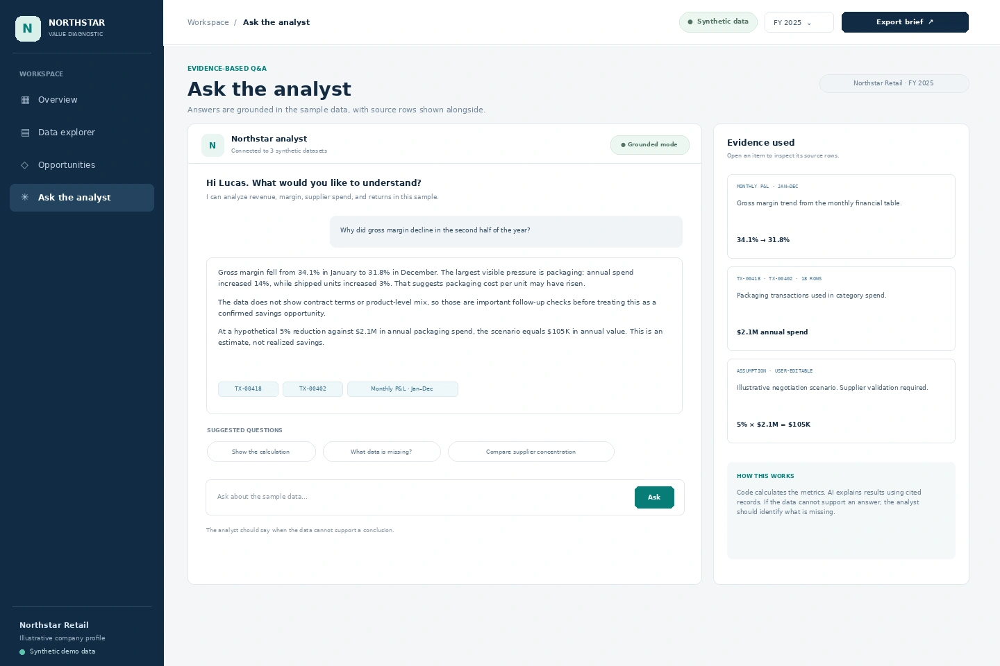

Personal project / AI Consultant Bot
Northstar: AI Consultant Bot
Northstar is the working concept for my AI Consultant Bot: a way to explore business performance, ask questions, and trace an answer back to the underlying data.
- My role
- Personal project
- Status
- In development
- Focus
- Business analysis and evidence
- Shown here
- Interface concepts with sample data

Project purpose
Business dashboards can show a lot of numbers without making the next question obvious. I’m interested in a tool that helps someone notice a change, investigate what might explain it, and decide what to examine next.
The concept
The overview brings together revenue, margin, supplier spend, and a short set of findings. A data explorer lets the user inspect the transactions behind the summary. An analyst view would connect a plain-English question to relevant evidence.

Evidence and assumptions
The answer should stay connected to its source. If the tool suggests looking into packaging costs, the user should be able to see the data and assumptions behind that suggestion. A confident paragraph alone is not enough.

Current status
These images show the direction of the interface. This is a project in development, not a finished product or a live client engagement. The planned demo uses fixed sample data so the analysis can be inspected and discussed.